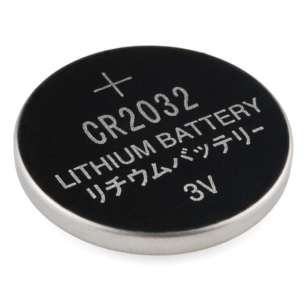
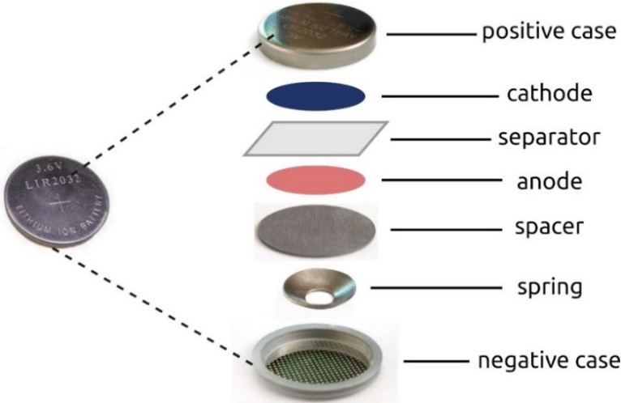

Odin-recipes
Battery

What is battery?
Battery is an electrochemical device that stores and releases electrical energy through a chemical reaction.
It consists of one or more electrochemical cells, which are enclosed in a container and connected in series or parallel to provide the desired voltage and capacity.
Each cell consists of two electrodes—an anode (negative electrode) and a cathode (positive electrode)—separated by an electrolyte.
The primary function of a battery is to provide portable and convenient power for various devices and applications. Here are some of the common uses of batteries:
Portable Electronics: Batteries power a wide range of portable electronic devices such as smartphones, tablets, laptops, cameras, and portable gaming consoles. These devices require a compact and lightweight power source, and batteries fulfill this requirement effectively.
Automotive Applications: Batteries are a crucial component in starting, lighting, and ignition systems of vehicles. They provide the necessary electrical energy to start the engine and power the lights, audio systems, and other electronic features in cars, motorcycles, boats, and other vehicles.
Renewable Energy Storage: With the increasing adoption of renewable energy sources like solar and wind, batteries play a vital role in storing the excess energy produced during peak generation periods. These energy storage systems help in mitigating the intermittent nature of renewable energy sources and enable a consistent power supply.
Uninterruptible Power Supply (UPS): Batteries are an essential part of UPS systems that provide backup power in case of utility outages or fluctuations. UPS systems are widely used in data centers, hospitals, critical infrastructure, and homes to ensure uninterrupted power supply and protect sensitive equipment from power surges or blackouts.
How to make a battery?
To create a coin cell battery, you'll need the following ingredients or components:
Ingredients:
Lithium metal or lithium compound (such as lithium carbonate or lithium hydroxide)
Electrolyte solution (commonly a non-aqueous solvent containing lithium salts)
Separator material (usually a porous material that separates the electrodes)
Cathode material (varies depending on the type of battery, such as manganese dioxide or lithium cobalt oxide)
Anode material (typically made of graphite or lithium)
Current collector (usually made of metal foil, such as aluminum or copper)
Coin cell case (typically made of stainless steel)

Steps to assemble a coin cell:
- Prepare the cathode: Mix the cathode material (e.g., manganese dioxide) with a binder, such as polyvinylidene fluoride (PVDF), and a conductive additive like carbon black. Spread the mixture onto a current collector (metal foil) and dry it.
- Prepare the anode: Mix the anode material (e.g., graphite or lithium) with a binder and a conductive additive. Spread the mixture onto a current collector and dry it.
- Prepare the separator: Cut a circular piece of separator material to match the size of the coin cell case.
- Assemble the cell: Place the cathode, separator, and anode on top of each other in the following order: cathode (with the current collector facing up), separator, anode (with the current collector facing down).
- Seal the cell: Press the stacked layers firmly together and insert them into the coin cell case. Ensure that the current collectors extend out of the case to provide electrical contact.
- Add electrolyte: Fill the coin cell case with the electrolyte solution, ensuring that it completely covers the cathode, anode, and separator.
- Seal the case: Use a crimping tool to tightly seal the coin cell case. This step ensures that the electrolyte remains inside the cell.
- Testing: Once the coin cell is assembled, you can test its voltage and capacity using appropriate equipment.